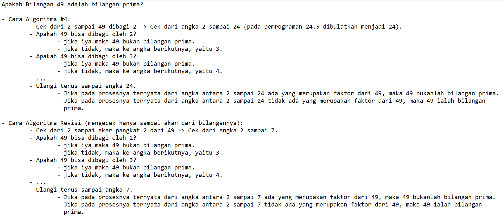

1. Revise Algorithm #4!

Seperti yang kita lihat pada algoritma #4 di atas, algoritma ini memakai cara looping dari angka 2 sampai angka N dibagi 2 untuk kandidat angka faktor yang mungkin terdapat pada angka n. Jika memang angka N bisa dibagi oleh angka-angka yang berkandidat sebagai faktor, maka angka N bukan angka prima.
Nah cara seperti algoritma #4 ini sebenarnya masih bisa direvisi karena pada algoritma ini, angka-angka kandidat yang ditentukan adalah dari 2 sampai N dibagi 2, padahal sebenarnya jika kita mengecek hanya dari angka 2 sampai akar dari N, angka-angka itu saja juga sudah mewakili untuk pengecekan apakah N merupakan bilangan prima atau tidak.
Contohnya ketika kita ingin mengecek 64, kita hanya perlu mengecek dari angka 2 sampai 8 (akar pangkat 2 dari 64), karena walaupun misal angka 16 juga merupakan faktor dari 64, tetapi angka ini sudah diwakilkan oleh angka 4 atau pengalinya. Jika 64 dibagi 4 hasilnya 16, maka itu sudah cukup menandakan bahwa 64 bukan bilangan prima, jadi tidak perlu dicek sampai angka 16, bahkan 32 seperti pada algoritma #4 (64 dibagi 2).
Contoh:
Tentu dengan algoritma revisi maka pencarian bisa dilakukan lebih cepat, sehingga dapat mengurangi time complexity dari O(N/2) menjadi O(sqrt(N)).
Contoh Implementasi C++:
.png)
Penggunaan algoritma ini juga bisa dipakai untuk soal nomer 2, yaitu untuk print N bilangan prima pertama.